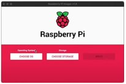

For this page, I will be showing you how to get Raspbian(or any other OS for that matter) on your Raspberry Pi.
Materials:
SD Card
Card Reader
Laptop/PC
Raspi.
First, download the Raspberry Pi Imager from here, or from the snap store(Ubuntu). After, plug in your SD card reader, and insert your SD Card. Once the RasPi imager is opened, you will see a screen like this:

After, choose OS(I reccommend Headless Raspbian, choose the SD drive(make sure it is not your C:/ Drive or any computer drive as such.) After, press Ctrl(Mac users press command) + Shift + X. From here enable SSH and put a Password, and set a device name you will remember. Finally , plug in a cable and insert the SD drive into the Pi.Here we will show you how to remotely connect into your raspberry pi. First, you will need an ip scanner, or a linux machine. For this, run sudo nmap –sS –T4 192.168.0.0/24, or any other ip range. When you see everything, search for something that says Raspberry Pi.
After, open the terminal and type in: ssh pi@ipaddress . You now have full remote control of your raspi from another computer.
You can run many things, including an apache web server, as aforementioned, and you can access the pi from any computer with ssh enabled.
You can also run SSH from your phone, using a client called JuiceSSH. For this, you will require a phone, and the ability to download apps from an app store. On Android, open the Play Store, and download juiceSSH (stylized JuiceSSH). Then, open the app and press Quick Connect. After, take the IP(Internet Protocol ) address that you got from running nmap(network mapper), and put it in ex: 192.168.0.13. After, check if you are connected. If there were no errors, and you see a terminal, congratulations! Otherwise, check your IP, and verify what it is.